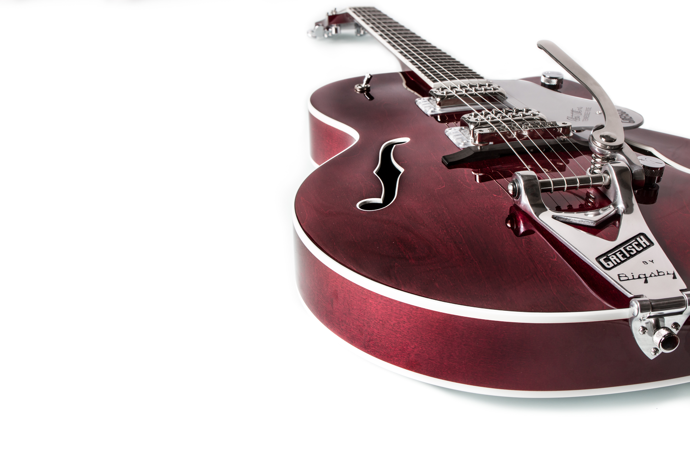
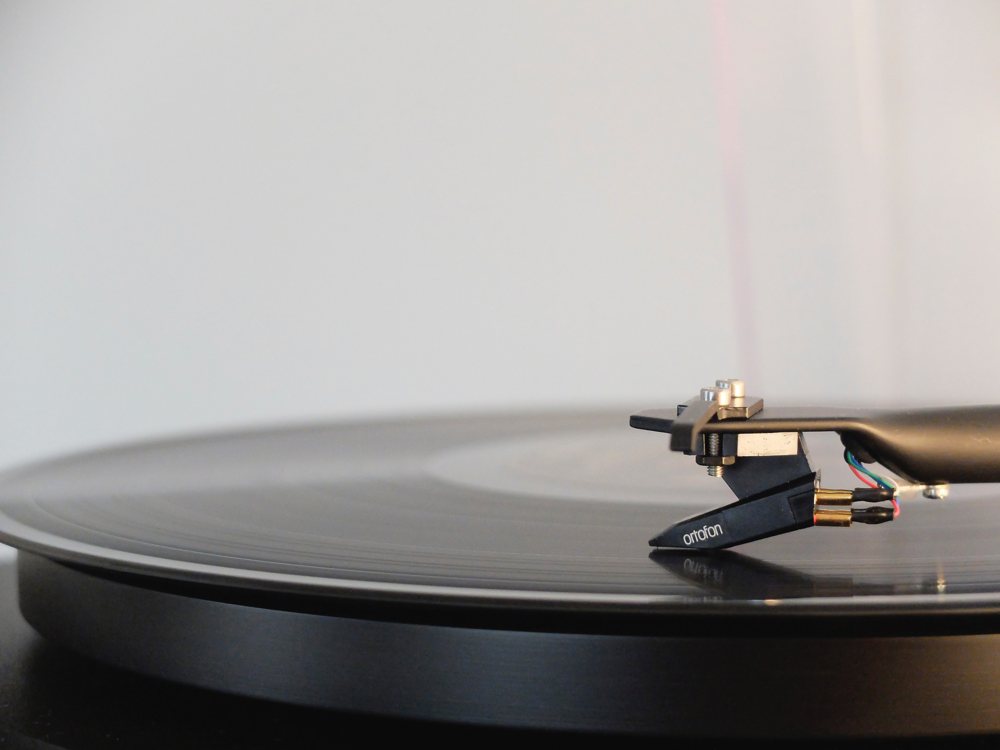

ROCK
POP
INFANTIL
SAMBA e CHORINHO
ACÚSTICO
REGGAE
DANCE
MPB
CORAL
BLUES
HARD ROCK
COUNTRY
BAIÃO e XOTE
SALSA
INSTRUMENTAL
 POP
POP SAMBA e CHORINHO
SAMBA e CHORINHO DANCE
DANCE CORAL
CORAL HARD ROCK
HARD ROCK COUNTRY
COUNTRY BAIÃO e XOTE
BAIÃO e XOTE SALSAPOPSAMBA e CHORINHODANCECORALHARD ROCKCOUNTRYBAIÃO e XOTESALSA
SALSAPOPSAMBA e CHORINHODANCECORALHARD ROCKCOUNTRYBAIÃO e XOTESALSA